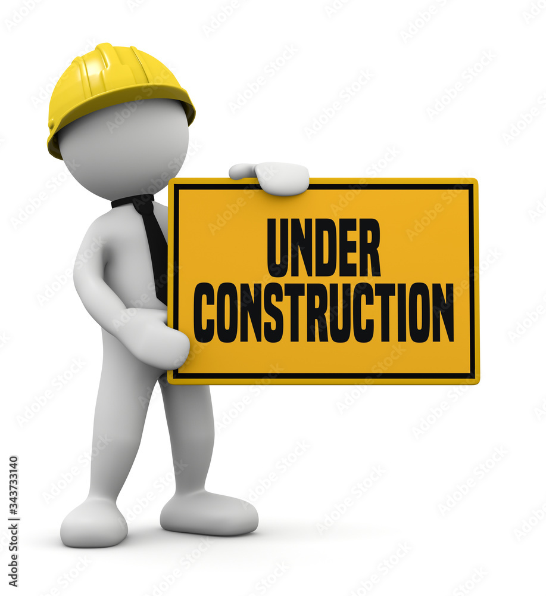

Hello, welcome to my entry point for my website. Below this introductory image is a list of links to take you to different asignments. Hopefully I will have figured out how to move it to the dropdown menu above instead next time. As a side not, I'm really sorry about all these late assignments and will try to eventually stop letting that happen.
Module 1 - Hierarchy
Module 2 - Inspiration
Module 3 - About

Even though it's just a mockup that's not functional, I already had some trouble even trying to make a menu bar for this assignment, and even then it still looks pretty scuffed. Hopefully I can get it to work properly next time. I've also been relying a lot on websites to help me use CSS especially, and even though I'm a bit worried it counts as cheating, it's helpful for learning what different elements and properties do in general (I also do not copy or paste anything from them into my assignments).
Right now, I've just listed them underneath the image and the description of what the website is, but this is just a bandaid solution that's meant to be temporary. The only good thing I can say about it is that it's usable for now.
While some parts of the layout will likely never be added (like the mobile layout), I did want to keep the general layout I drew out the same, so there's still an image with text to the right, as well as text below those two elements. I do realize now though that the font text has to be pretty large, or I have to write more than I thought I would.